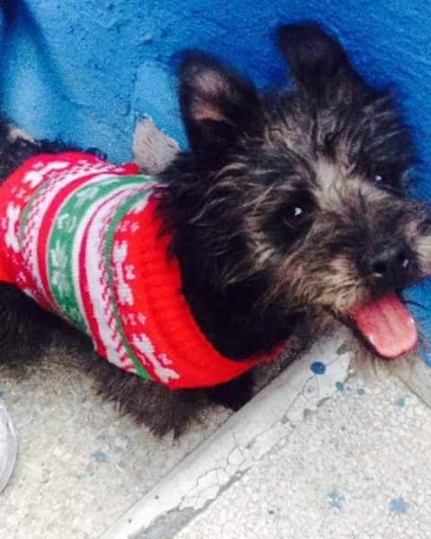

¡Hola mundo! Soy Sandy, pero me gusta que me digan Sandía. Estudié Biología e Histopatología en la UNAM. Actualmente estoy estudiando para ser desarrolladora Java Full Stack en Generation México. ¡Bienvenid@ a mi página!"
Ámbito profesional
Estoy estudiando para ser desarolladora Java Full Stack con el equipo de Generation México. Estoy aprendiendo html, css, java, java script y sql
Estudie la licenciatura en Biología en la Facultad de Ciencias de la UNAM
Mi tesis la estoy haciendo en el Instituto Nacional de Cancerología (INCAN). En ella hablo sobre la sinergía de dos medicamentos (Sotorasib y Resveratrol) para el tratamiento del cáncer de pulmón de células no pequeñas al silenciar al oncogen K-RAS, que es uno de los oncogenes más letales del cáncer de pulmón.
Tengo una carrera técnica en Histopatología
Mi servicio social fue una de mis mejores experiencias pues la realice en el Hospital Infantil de México Federico Gómez. Realice labores en los departamentos de cardiopatías congénitas, genética y biología del desarrollo
Gané el segundo lugar en el XXVI Concurso de Feria de las ciencias por mi trabajo "Existencia de hongos en fómites de uso cotidiano"
Soy B2 en la lengua inglesa
Tengo el certificado de DELF A2 en francés
Estoy acreditada por la Cruz Roja para dar primeros auxilios
Trabajé como master lúdico, hosstess y mayormente barista en la Caravana, Juegos de mesa. Dónde aprendí sobre servicio al cliente, organización e higiene, trabajo en equipo y comunicación asertiva
Datos curiosos sobre mí
Mi película de comfort es Toy Sory
Tengo un toc de siempre con cualquier cosa primero me como todo lo del alrededor y finalmente el centro
Mis dos bandas favoritas son My chemical Romance y Pink Floyd
Me encanta todo lo que tenga que ver con el mar, me calma
Tengo sinestesia
Mi escritor favorito es Edgar Allan Poe
Me encanta todo lo que tenga que ver con suspenso y terror. Incluso es de lo que suelo escribir, pero eso no me quita lo chillona
Mi abuelito fue un cantante de ópera famoso y debido a mi cercanía con la música toque durante varios años el violín en una orquesta
Soy Capricornio
Viví en Montreal durante mi infancia y ahora aunque entiendo practicamente todo del francés me cuesta hablarlo
Mi pintora favorita es Remedios Varo
Me gustan demasiados géneros de música. Desde la música clásica, el rock, metal, kpop, reggaeton, pop, alternativo, etc
Me sube el ego que entre mis amigos me llaman "la rota" por que suelo ganar muy seguido los juegos de mesa
Soy multifacética. Me encanta conocer cosas nuevas y aprender
Mi seudónimo es "Sandra Cirnes" por que es una combinación del apellido de mi abuelito "Cirigo" y mis dos apellidos
Mi familia y mascotas
Mi familia es chiquita pero bonita. Tengo una hermana que estudia veterinaria y tanto mi mamá como mi papá son biólogos marinos. Por otro lado soy madre de dos bendiciones llamadas Kyrie (alias Kyrilla Von Alexandra II y Dixie (alias Dixie-du) También siempre será parte de mi familia mi perrito llamado Tchaik (por que le gustaba escuchar a Tchaikvosky) que aunque ya no está con nosotros siempre formará parte de mi corazón
;

Mis hobbies
Mi pasión en la vida es escribir así que es lo que suelo hacer en mis ratos libres. También me gusta leer, hacer cerámica, armar rompecabezas, ver series y animes, bailar, escuchar música, tomar fotos, ver películas, salir con mis amigos y jugar juegos de mesa